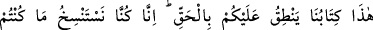
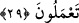
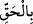
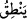

huzurunda diz çökecekler. Allah Teâlâ îmâna, “sen ve ehlin cennete gidiniz”
buyuracak. Şirke ise “sen ve ehlin cehenneme gidiniz” buyuracaktır.
29. «Bu, yüzünüze karşı gerçeği söyleyen kitabımızdır. Çünkü biz, yaptıklarınızı
kaydediyorduk.»
Ayrıca onlara “İşte Kitabımız, aleyhinize”, ilâvesiz ve eksiksiz olarak “gerçeği
söylüyor. Çünkü biz,” dünyada iyi yahut kötü, küçük yahut büyük “yaptıklarınızı”,
yaptığınız amelleri eksiksiz olarak “yazıyorduk.”
Bu âyet olduğu gibi o gün onlara söylenecek söz cümlesindendir. Her ümmetin kitabı
Allah’ın emriyle yazıldığı için kitap kelimesi şânının yüceliği ve durumunun önemine
binâen azamet “nûnu”na izâfe edilmiş ve “bu bizim kitabımızdır” buyrulmuştur. Yoksa
zâhir olan bir önceki âyette olduğu gibi, kitap kelimesinin, ümmet kelimesine muzâf
olmasıdır.
“Gerçeği söylüyor.” Bu cümle “” kelimesinin başka bir haberidir. “ kelimesi
ise “nun fâilinden haldir. Bu ifâde kitabın onların amellerini hiç eksiksiz olarak
konuşmasının gerekçesidir. Yâni “biz daha önce bu amelleri meleklere yazdırıyorduk”
demektir.
Yâni “biz meleklere sizin amellerinizi yazmalarını ve sizin adınıza bunu isbat
etmelerini emrederiz.” Burada “sin”, “taleb” içindir. Nesh, bir asıldan nakletmektir. Bir
kitabın diğer kitaptan neshedilmesi böyledir. Fakat bazan ilk olarak yazmaya ve
yazılanlara da nesh denilir. Bazıları demişlerdir ki: Her sabah ve akşam İsrâfîl (a.s.)
tarafından bir melek her insanın amelini yazan kâtip meleğin yanına iner, kişinin o gün
ve gece yapacağı amellerini yazar, bu zaman zarfında karşılaşacağı amel ve işleri de
yazar.
Peygamberimiz (s.a.) şöyle buyurmuştur: “Allah Teâlâ’nın ilk yarattığı şey kalemdir.
Kalem dünyada yapılan iyi ve kötü her ameli yazar. Onu bir dosyada korur. İsterseniz
“Çünkü biz, yaptıklarınızı yazıyorduk” âyetini okuyunuz”[17]
Nüsha yapmak, kaydetmek yapılan iş içindir.
İbn Abbâs (r.anhüma) şöyle demiştir: Allah Teâlâ her Ramazan ayında kendi katında
yazılı bulunan nüshadan meleklerin yazmaları için melekleri görevlendirir. Bu melekler
gelecek sene Ramazan ayına kadar olacak şeyleri kaydederler. Bu yazıcı melekler kullar
adına “hafaza” diye bilinen koruma melekleriyle her perşembe akşamı yâni Cuma gecesi
muâraza eder ve hafaza meleklerinin dosyalarını kendi kayıtlarına uygun bulurlar. Bunda
hiçbir fazlalık yahut noksanlık yoktur. Nihâyet bu kayıt evrakı bitip iş kesilip ecel
gelince bu hafaza melekleri “hazene” denilen yazıcı meleklerin yanına gelir. O günün